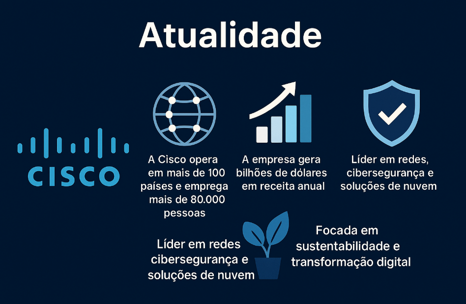

Atualidade da Cisco
Em 2025, a Cisco continua sendo uma das maiores e mais influentes empresas de tecnologia do mundo. Com foco em inovação, segurança digital e sustentabilidade, a empresa está liderando iniciativas para transformar a forma como o mundo se conecta.
A Cisco investe fortemente em tecnologias emergentes como inteligência artificial, redes autônomas, 5G e Internet das Coisas (IoT). Seu ecossistema abrange soluções completas para empresas de todos os portes, promovendo eficiência, escalabilidade e segurança.
A empresa também se destaca por sua atuação em sustentabilidade ambiental, com metas ambiciosas de neutralidade de carbono e iniciativas que promovem a economia circular.
Além disso, a Cisco promove eventos como o Cisco Connect, reunindo especialistas e empresas para discutir o futuro da tecnologia na América Latina e no mundo. Em 2025, o evento será realizado em Cancún, México.
Com um portfólio robusto, compromisso com a educação em tecnologia e liderança em infraestrutura de redes, a Cisco segue como referência global em soluções digitais.